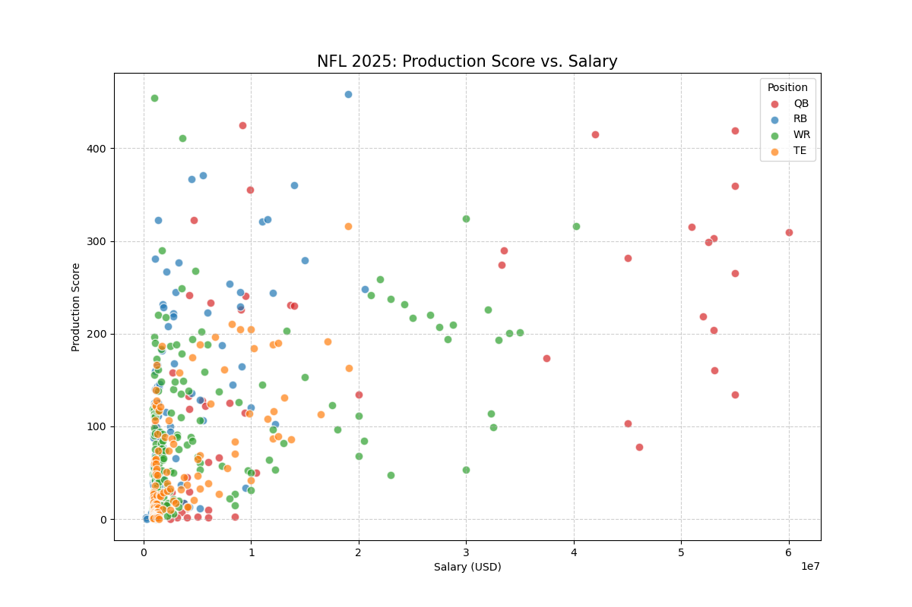
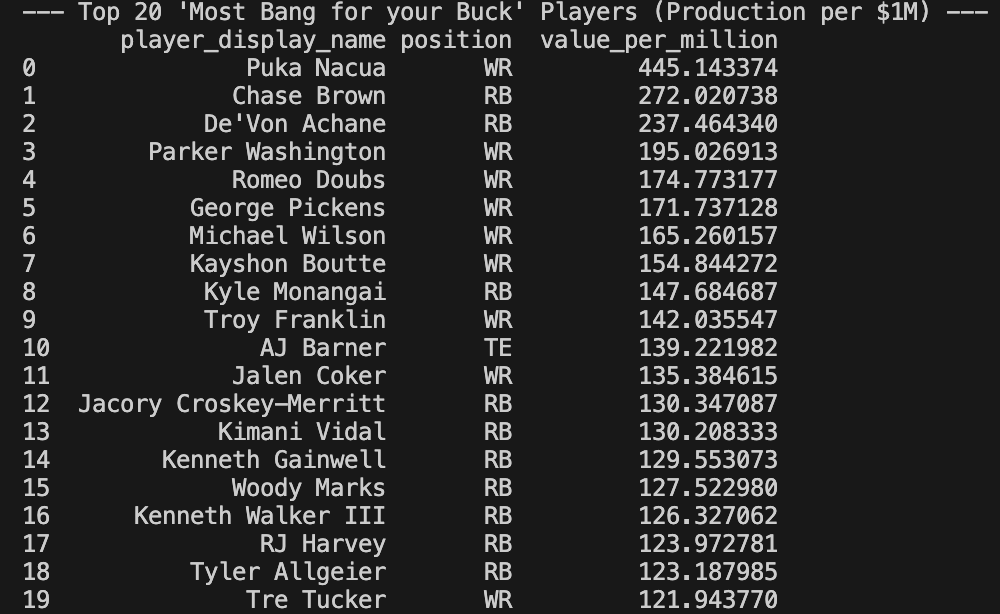

The players with the "Most Bang for Your Buck" in 2025 are those who had the highest production score relative to their salary. The scatterplot graph shows how players of different positions (QB, RB, WR, TE) performed in terms of production score compared to their salary. Players in the top right quadrant of the graph had high production scores and relatively low salaries, indicating they provided great value to their teams. The top 20 players listed in the table are those who stood out as exceptional values based on their performance and compensation. One thing that I noticed and found interesting is that nearly all of the top 20 "Most Bang for Your Buck" players were on their rookie contracts who broke out in the 2025 season, which are typically more team-friendly and lower than the salaries of veteran players. This highlights the importance of drafting well and developing young talent in the NFL, as these players can provide significant value to their teams without commanding high salaries.